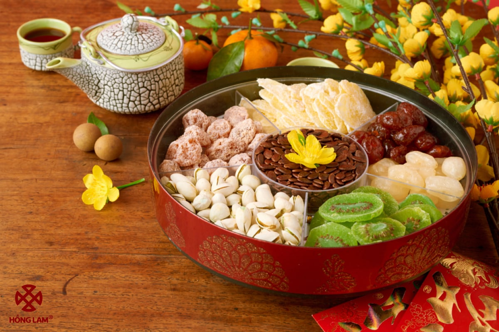

Khay mứt Tết với đủ sắc màu và hương vị từ lâu đã trở thành nhịp cầu nối những câu chuyện đầu năm của người Việt. Mỗi loại mứt không chỉ là một món ăn chơi mà còn là kết tinh của sự khéo léo và tỉ mỉ. Trong không khí hân hoan của năm Bính Ngọ 2026, chén trà nóng thơm nồng nhâm nhi cùng miếng mứt gừng cay ấm hay mứt hạt sen bùi ngọt sẽ làm cho những cuộc trò chuyện cùng người thân, bạn bè trở nên đậm đà và ý nghĩa hơn bao giờ hết.
Ý nghĩa: Thể hiện sự hiếu khách và mong ước một năm mới ngọt ngào, hạnh phúc. Các loại phổ biến: Mứt dừa, mứt gừng, mứt hạt sen, mứt quất (tắc), mứt bí.